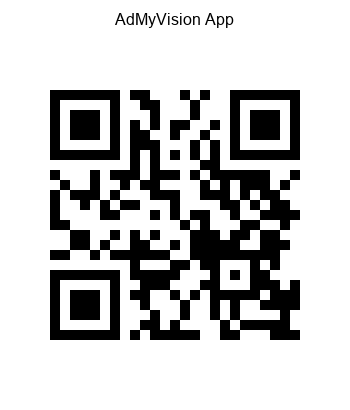

Chrome will show a "Relaunch" button at the bottom. Tap it to restart Chrome with the new settings.
✅ Step 5: Test Camera Access
After Chrome restarts:
Navigate to the AdMyVision app:
http://192.168.1.3:8502
Select "Phone Camera (WebRTC)" mode
Grant camera permissions when prompted
🎉 Camera should now work!
📱 Quick Access QR Codes
Scan these with your phone camera app:
Chrome Flags Setup

AdMyVision App
🎯 Why This Works
This setting tells Chrome to treat your laptop's HTTP connection as if it were HTTPS, enabling camera access for your local network. This is safe because it only applies to your specific laptop IP address.
🔒 Security Note
This setting only affects the specific URL you added (your laptop). It doesn't make other websites less secure. You can remove it later by going back to Chrome flags and setting it to "Default".
AdMyVision Chrome Setup Guide |
Need help? Check the app's troubleshooting section